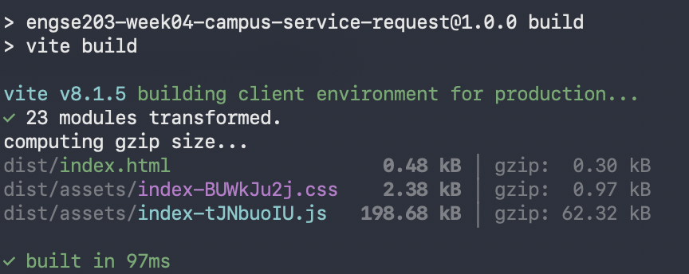
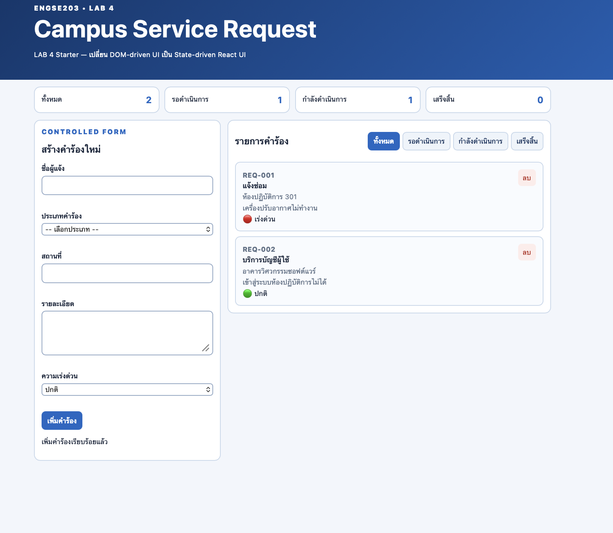
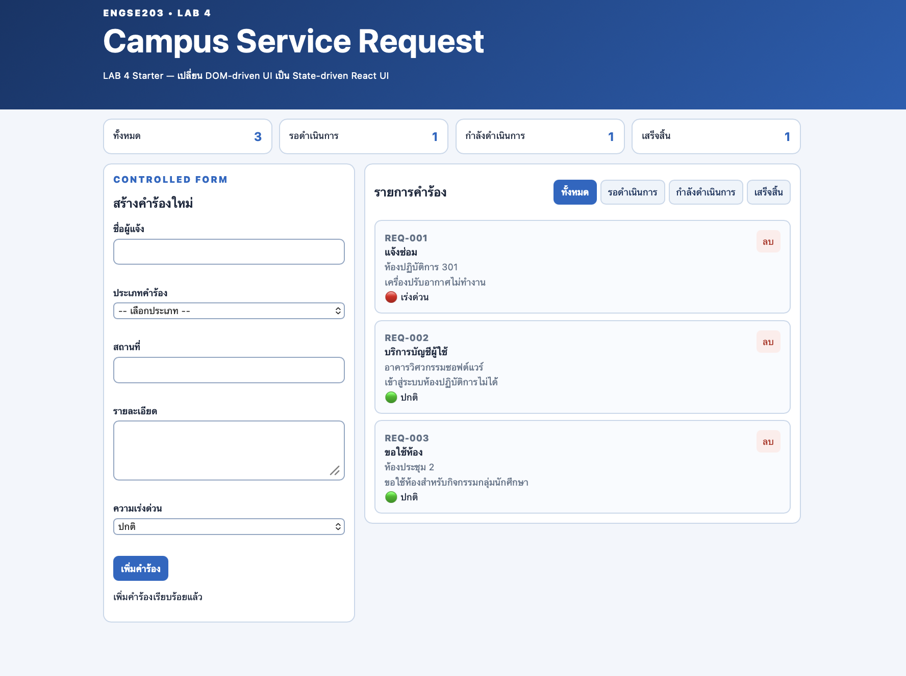
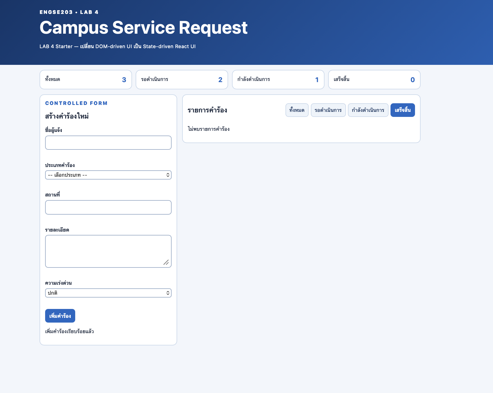
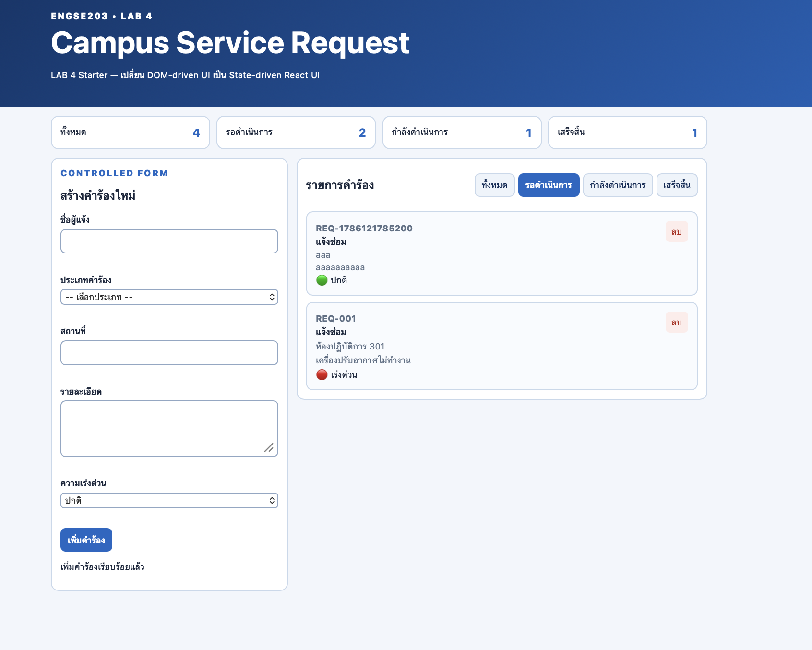
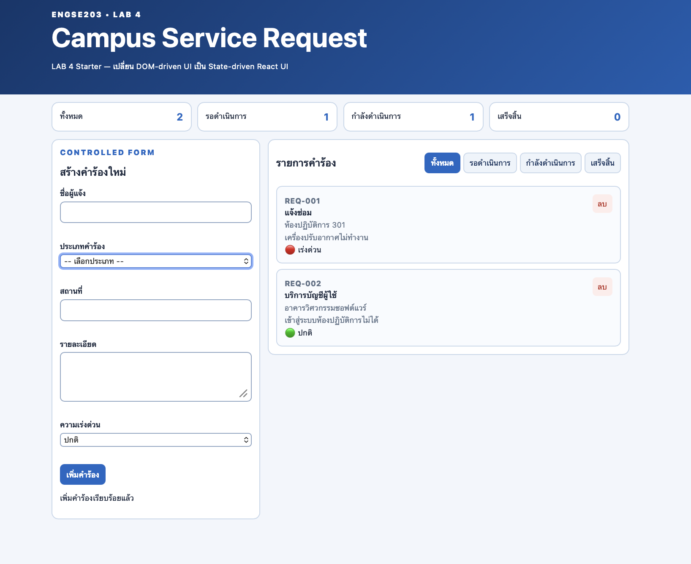
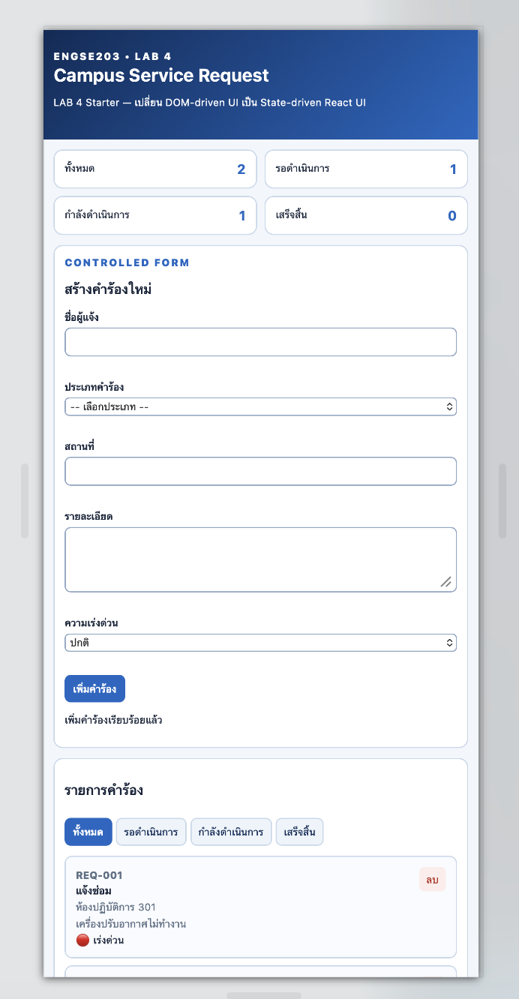
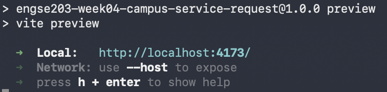
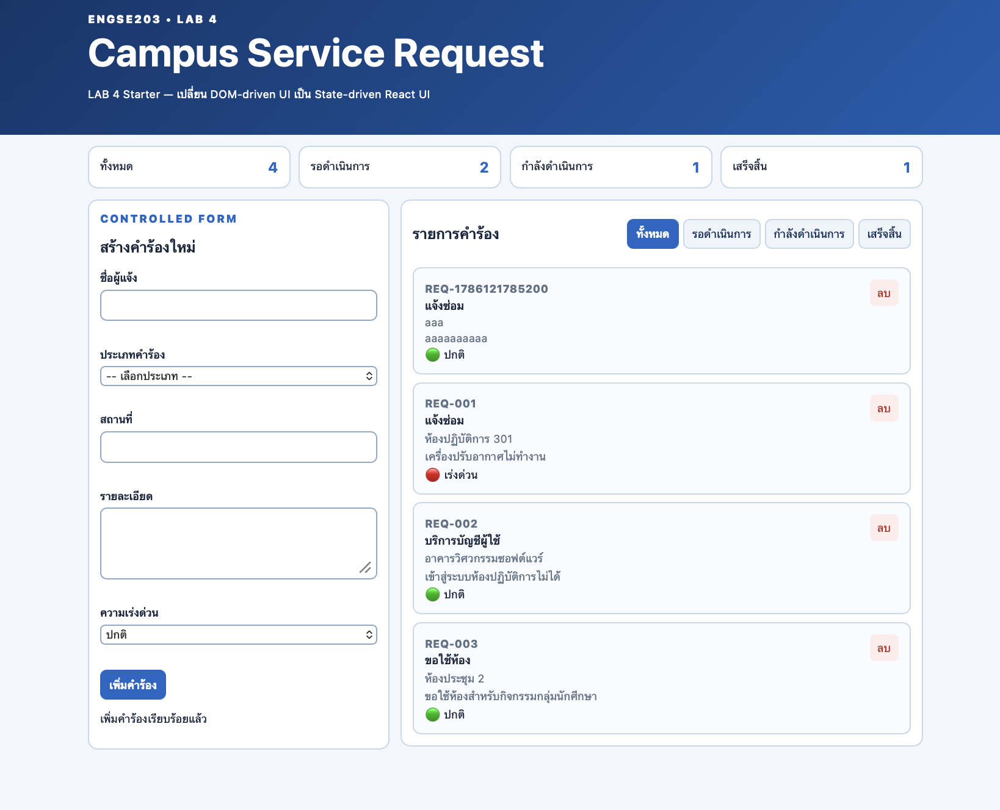
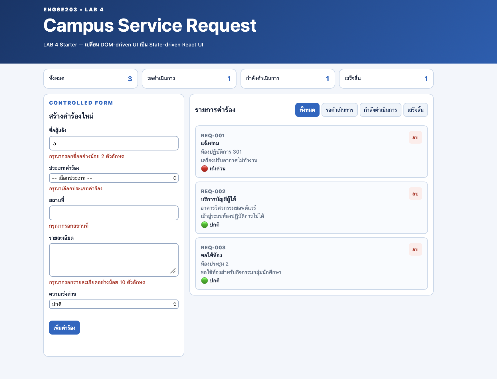

รายละเอียดผลงาน
Completed React components, state, controlled form, validation, filtering, delete, responsive UI, and evidence.
ผลตรวจ: passVersion:
lab-04-submission-v2ภาพหลักฐาน (10)




















เอกสารและผลการทดสอบ
README.md
## Test Evidence Screenshots ### TC-01 — Initial State  ### TC-03 — Validation  ### TC-04 — Valid Add / Success  ### TC-05 — Filter  ### TC-07 — Empty State  ### TC-08 — Delete Request  ### TC-09 — Mobile 375px  ### TC-10 — Keyboard Navigation  ### TC-11 — Production Build  ### TC-11 — Production Preview  ### TC-12 — GitHub Pages  ### TC-12 — GitHub Pages Console 
README.md
# ENGSE203 LAB 4 — Student Evidence README
## ผู้จัดทำ
* ชื่อ–นามสกุล: `<กรอกชื่อ–นามสกุล>`
* รหัสนักศึกษา: `68543210078`
* Section: `<กรอก Section>`
## URLs
* Repository: `https://github.com/Mangporunicorn/engse203-student-labs-68543210078`
* Pull Request: `<ใส่ Pull Request URL หลังสร้าง PR>`
* GitHub Pages: `<ใส่ GitHub Pages URL หลัง Deploy>`
## Component Tree
```text
App
├── AppHeader
├── SummaryPanel
├── RequestForm
├── FilterBar
└── RequestList
└── RequestCard
```
### State Owner
```text
App
├── requests
│ ├── ส่ง summary → SummaryPanel
│ ├── ส่ง filteredRequests → RequestList
│ └── รับ callback จาก RequestForm / RequestCard
│
└── statusFilter
├── ส่ง value → FilterBar
└── รับ callback onFilterChange
RequestForm
└── formData / errors / statusMessage
```
`App` เป็นเจ้าของ state หลักของระบบ ได้แก่ `requests` และ `statusFilter` เพราะข้อมูลสองส่วนนี้ถูกใช้งานร่วมกันหลาย Component ส่วน `RequestForm` เป็นเจ้าของ `formData`, validation errors และข้อความแจ้งผล เนื่องจากข้อมูลเหล่านี้เกี่ยวข้องเฉพาะกับฟอร์มสร้างคำร้อง
## Setup และ Run
```bash
nvm use
npm install
npm run dev
npm run check
npm run build
npm run preview
```
สามารถรันจาก root ของ Student Repository ได้ด้วย:
```bash
npm --prefix labs/week-04/source install
npm --prefix labs/week-04/source run dev
npm --prefix labs/week-04/source run check
npm --prefix labs/week-04/source run build
```
## State / Props / Callback Explanation
ระบบ LAB 4 ใช้แนวคิด State-driven UI โดยให้ `App.jsx` เป็นเจ้าของ `requests` และ `statusFilter` state แล้วส่งข้อมูลลงไปยัง Child Components ผ่าน Props
`SummaryPanel` รับ `summary` ที่คำนวณจาก `requests` เพื่อแสดงจำนวนคำร้องทั้งหมดและจำนวนในแต่ละสถานะ ส่วน `FilterBar` รับค่า `statusFilter` ผ่าน `value` และส่งค่าที่ผู้ใช้เลือกกลับไปยัง `App` ผ่าน callback `onFilterChange`
`RequestList` รับรายการคำร้องผ่าน `requests` และใช้ `map()` สร้าง `RequestCard` แต่ละรายการ โดยใช้ `request.id` เป็น React key ส่วนการลบรายการจะส่ง `request.id` จาก `RequestCard` กลับขึ้นไปยัง `App` ผ่าน `onDeleteRequest`
`RequestForm` เป็นเจ้าของ `formData` state ของตัวเอง โดย input, select, textarea และ radio เป็น Controlled Components ที่อ่านค่าจาก state และอัปเดตผ่าน `onChange` เมื่อผู้ใช้ Submit ข้อมูลที่ผ่าน Validation แล้ว `RequestForm` จะเรียก `onAddRequest` เพื่อส่งข้อมูลขึ้นไปยัง `App` และให้ `App` เพิ่มคำร้องด้วย Immutable State Update
## Test Evidence
| Test ID | Actual Result | Pass/Fail | Evidence/Screenshot |
| ---------------------- | -------------------------------------------------------------------------------- | --------- | ----------------------------------------- |
| TC-01 Initial | หน้าเว็บแสดงรายการเริ่มต้นและ Summary ตามข้อมูลใน `initialRequests` | Pass | `../evidence/desktop.png` |
| TC-02 Controlled input | เมื่อกรอกข้อมูล ค่าใน input/select/textarea/radio ถูกควบคุมด้วย `formData` state | Pass | `../evidence/desktop.png` |
| TC-03 Invalid | Submit ฟอร์มที่ข้อมูลไม่ครบแล้วไม่เพิ่มคำร้อง และแสดง Validation Message | Pass | `../evidence/validation.png` |
| TC-04 Valid add | กรอกข้อมูลถูกต้องแล้วสามารถเพิ่มคำร้องใหม่ และฟอร์ม Reset หลัง Submit | Pass | `../evidence/success.png` |
| TC-05 Filter | เลือก Filter แล้วแสดงเฉพาะรายการที่มี Status ตรงกับ Filter | Pass | `../evidence/filter-pending.png` |
| TC-06 All | เลือก `All` แล้วกลับมาแสดงคำร้องทุกสถานะ | Pass | `../evidence/desktop.png` |
| TC-07 Empty | เมื่อไม่มีรายการที่ตรงกับเงื่อนไข ระบบแสดง Empty State | Pass | `../evidence/empty-state.png` |
| TC-08 Delete | ปุ่มลบสามารถลบรายการโดยใช้ `request.id` และ Summary อัปเดตตาม State ใหม่ | Pass | `../evidence/empty-state.png` |
| TC-09 Mobile | Layout ที่ความกว้าง 375px แสดงผลได้โดยไม่มี Horizontal Scroll | Pass | `../evidence/mobile-375.png` |
| TC-10 Keyboard | สามารถใช้ Keyboard เข้าถึง Form, Filter และปุ่มต่าง ๆ ได้ และมี Focus State | Pass | `../evidence/keyboard-focus.png` |
| TC-11 Build | `npm run build` และ `npm run preview` ทำงานผ่าน สามารถเปิด production build ได้ตามปกติ | Pass | `../evidence/build.png`, `../evidence/preview.png` |
| TC-12 Pages | ต้องยืนยันหลัง Merge และ Deploy GitHub Pages จาก `main /docs` | Pending | เพิ่ม Screenshot GitHub Pages หลัง Deploy |
## Screenshots
* Desktop: `../evidence/desktop.png`
* Mobile 375px: `../evidence/mobile-375.png`
* Validation: `../evidence/validation.png`
* Successful submit: `../evidence/success.png`
* Filter pending: `../evidence/filter-pending.png`
* Empty state: `../evidence/empty-state.png`
* Keyboard focus: `../evidence/keyboard-focus.png`
* Project check: `../evidence/check-pass.png`
## Week 03 → Week 04 Reflection
ใน Week 03 การเปลี่ยนแปลงหน้าเว็บต้องจัดการ DOM โดยตรง เช่นการค้นหา Element และเปลี่ยนข้อมูลในหน้าเว็บด้วย JavaScript แต่ใน Week 04 เปลี่ยนมาใช้แนวคิด State-driven UI ของ React โดย UI จะ Render ใหม่ตาม State โดยอัตโนมัติ การแบ่งระบบเป็น Components ทำให้แต่ละส่วนมีหน้าที่ชัดเจนและสามารถส่งข้อมูลผ่าน Props และ Callback ได้ นอกจากนี้การใช้ Immutable State Update ช่วยลดปัญหาจากการแก้ไข Array หรือ Object เดิมโดยตรง และทำให้การจัดการข้อมูลของระบบเป็นระบบมากขึ้น
## AI / External Resource Disclosure
* AI tool used: ChatGPT
* Used for: ศึกษาแนวคิด React Components, Props, State, Controlled Form, Validation, Immutable State Update และช่วยตรวจสอบโครงสร้าง LAB 4
* Important prompts/questions: ขอคำอธิบายการเปลี่ยนจาก DOM-driven UI ใน Week 03 เป็น State-driven React UI, วิธีใช้ `useState`, Controlled Form, Filter และการเพิ่ม/ลบข้อมูลแบบ Immutable
* My adaptation: นำตัวอย่างและคำอธิบายมาปรับให้เข้ากับโครงสร้าง Starter Code ของ LAB 4 และ Requirement ของ Campus Service Request
* Verification: ตรวจสอบผลด้วย `npm run check`, ทดสอบการทำงานของ Form, Validation, Filter, Delete, Empty State และ Responsive Layout ก่อนเตรียม Build และ Deploy